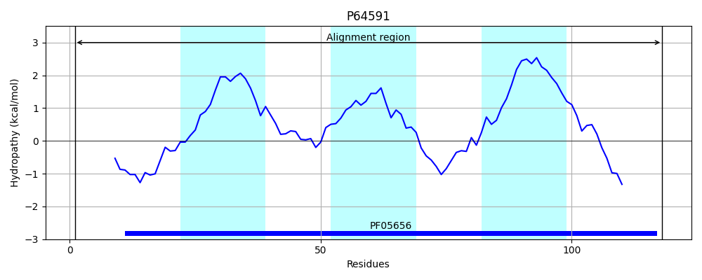
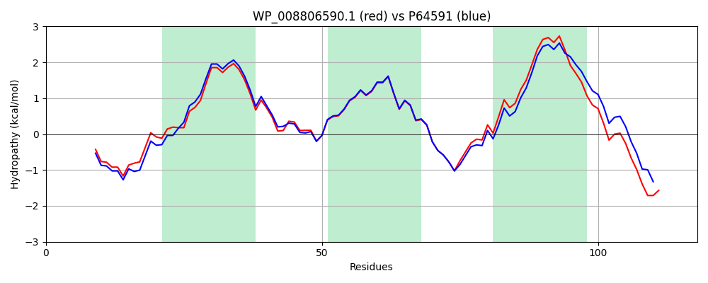

WP_008806590.1
Hit Accession: P64591
Hit TCID: 9.B.124.1.2
Hit Description: gnl|BL_ORD_ID|11209 gnl|TC-DB|P64591|9.B.124.1.2 Inner membrane protein yhaH OS=Escherichia coli O157:H7 GN=yhaH PE=3 SV=1
Mach Len: 118
e:0.000000
Query TMS Count : 3
Hit TMS Count: 3
TMS-Overlap Score: 2.700000
Predicted Substrates:None
BLAST Alignment:
| Protein Hydropathy Plots: | |
|---|---|
 |  |
Pairwise Alignment-Hydropathy Plot: | |
|  | |